Gallery of patterns
Implementation 04-3, Phase 2: the patterns of each hand for the levels of the Whole Song simplification, found in Chopin (snapshots of your PDFs) or drawn by the app (the easy patterns of the brief, and the variations of easy, medium and hard asked in your review). Each pattern has a number inside its hand and level (Hard 3), to name it in the Enhance with AI dialog. Every Chopin passage is also written in the app's notation from the kern of the first edition and drawn by the app, with the snapshot of the edition under it; the app writes one voice per hand, no tuplets, and its own accidentals and clefs. The drawn patterns share one melody in Fa major (two bars of Fa, one of Do, then Sib and Do), so that only the left hand changes from one to the next. In each snapshot the other hand is grey. The names are the ones the level prompts of Phase 3 will use.
Easy 1 Slow melody in single notesslow-melody-single-notes
Si4 held for three beats, then Do5: the melody alone, with long notes and no chords. Easy because the hand has one note at a time and almost no movement.
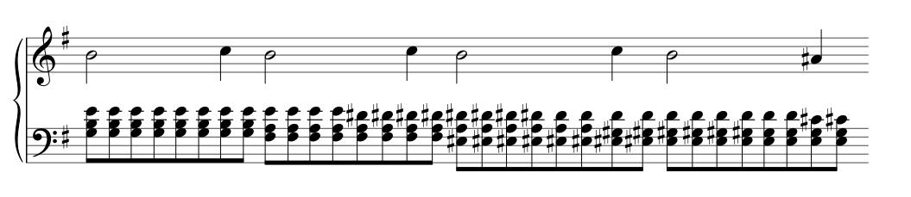
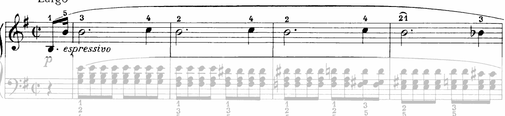
Easy 2 Melody in single notesmelody-single-notes
Fa#5-Sol5-Fa#5-Do#5-Re5-Si4 in corcheas, then La#4: one line of single notes inside one hand position. Easy because there are no chords, also when the notes are corcheas.
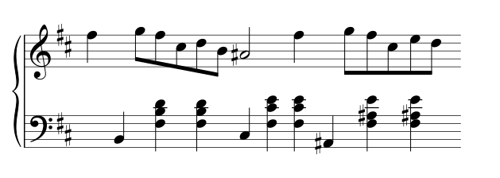
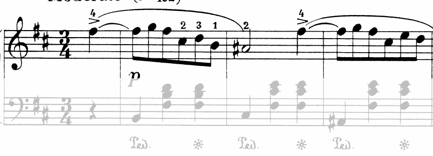
Medium 1 A second note on long notessecond-note-on-long-notes
Single notes on the short figures, and a second note (a third, a sixth) only on the long ones; three notes only to land on a long note. Medium because the hand stays fluent and the chords come when there is time for them.
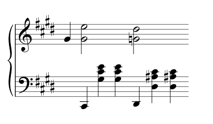
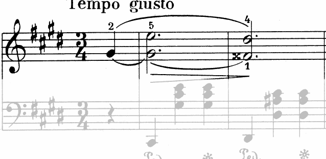
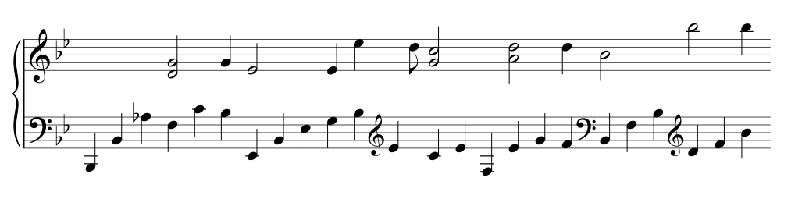
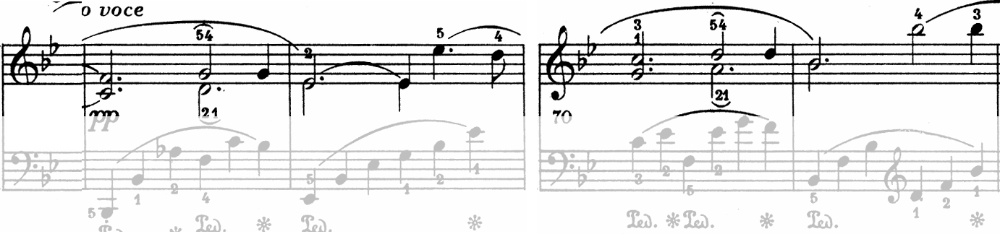
Hard 1 Melody in chords, one rhythmmelody-in-chords-one-rhythm
The melody on top of three-note chords on every negra, with the same rhythm (corchea with puntillo, semicorchea, two negras) every two bars. Hard because every note is a chord, although the rhythm repeats and the tempo is slow.
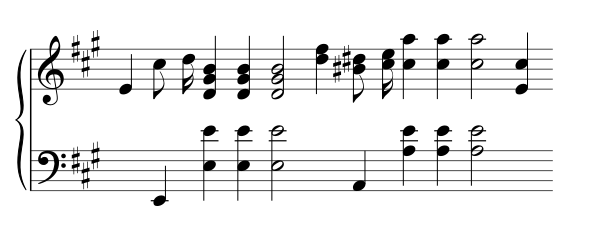
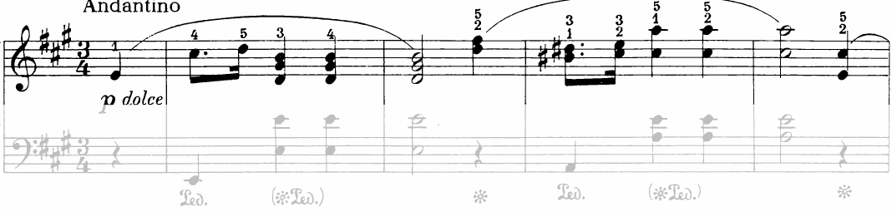
Hard 2 Melody with small pieces of chordsmelody-with-pieces-of-chords
The melody on top (Sib5, Lab5, Solb5) with a second voice and two-note pieces of chords under it, and a few decoration notes. Hard because the hand plays the melody and part of the harmony (the brief's example of Ballade No. 4).
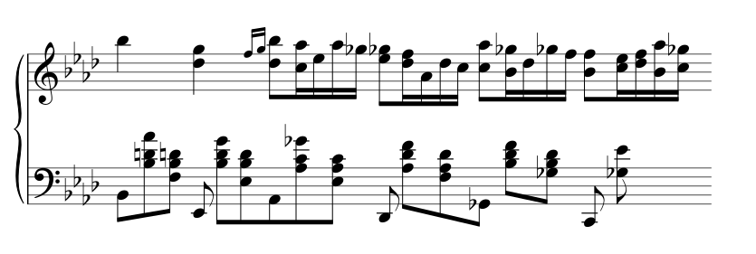
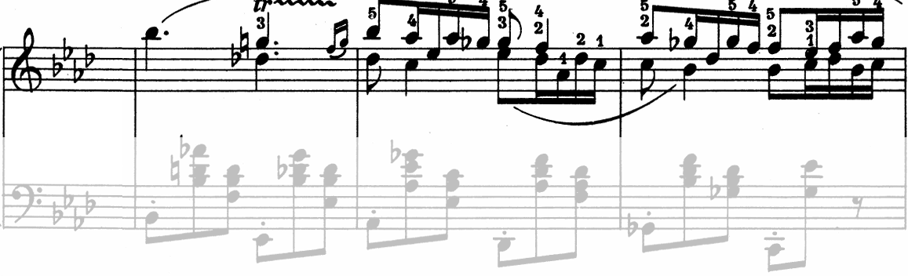
Hard 3 Melody over an inner linemelody-over-inner-line
The melody in negras with puntillo on the fifth finger, and a line of corcheas under it in the same hand. Hard because one hand plays two voices with different rhythms.
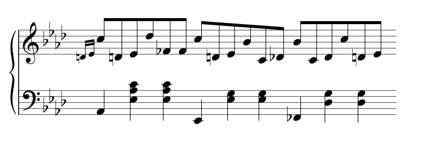
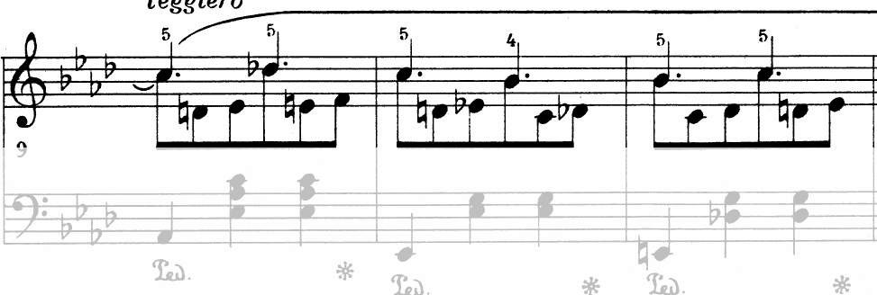
Hard 4 Thirds and sixths in corcheasthirds-and-sixths-in-corcheas
Two notes on every corchea (Fa5-Reb5, Mib5-Sol4) after a long two-note chord. Hard because the hand plays double notes fast, although it keeps the same shape.
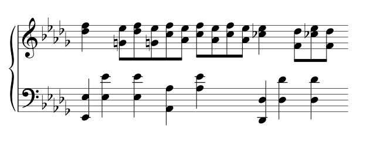
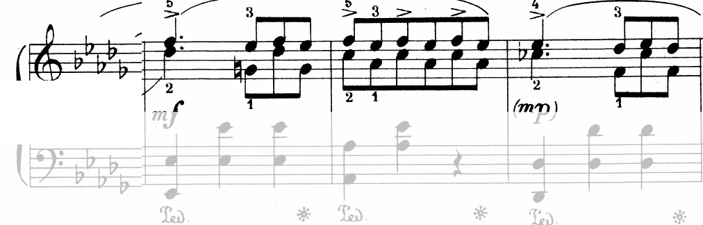
Super hard 1 Full chords in octavesfull-chords-in-octaves
Chords of four and five notes, ff, with the melody doubled at the octava and jumps up of an octave (La4-Do#5-La5, then La5-Do#6-La6). Super hard because the hand is open to its limit and jumps.
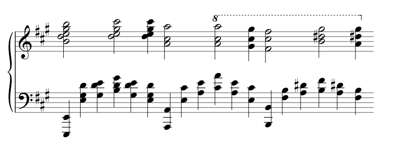
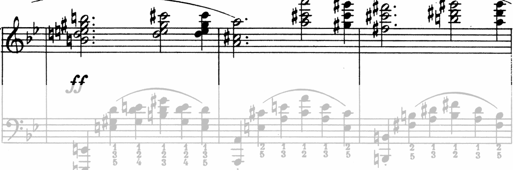
Super hard 2 Runs in groups of 7 and 8runs-in-groups
Fast runs of semicorcheas in groups of 7 and 8 that cross positions, over the left hand's sweeps. Super hard because the hand moves without rest and both hands move at once.
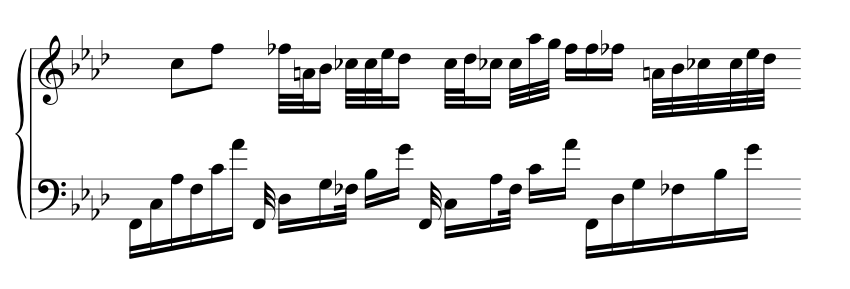
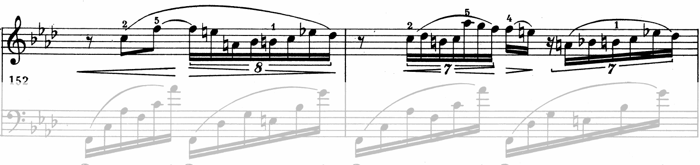
Easy 1 Held triadheld-triad
The chord of the harmony (Fa-La-Do) held under the melody; the hand changes position only when the harmony changes. Easy because the hand holds one shape and does not move inside the chord.
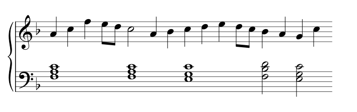
Easy 2 Low note, then the chordlow-note-then-chord
Fa2, then Fa3-La3-Do4: one note and one chord, the same shape every time. Easy because the hand makes one jump of an octave to a triad that does not change.
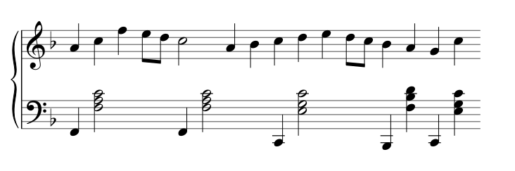
Easy 3 Triads in stepstriads-in-steps
The triad slides one step up or down with the melody (Fa-La-Do, Sol-Sib-Re, La-Do-Mi). Easy because the three fingers keep one shape and the hand moves one key at a time.
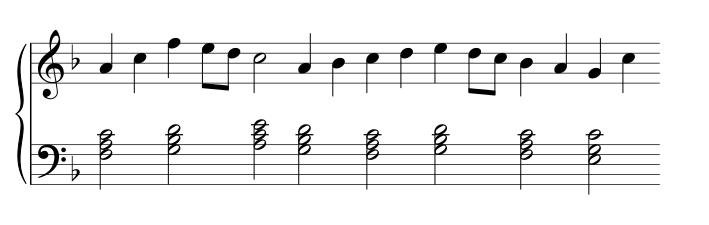
Easy 4 Held chord, repeatedheld-chord-repeated
A small chord held as a blanca and played again with the same notes, bar after bar. Easy because the hand does not move at all.
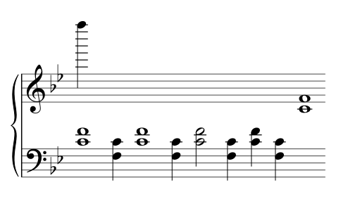
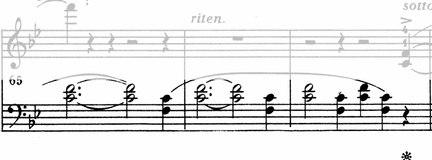
Easy 5 Low note, then two notes rockinglow-note-then-two-notes-rocking
Fa2, then La3-Do4-La3-Do4 in corcheas: one low note, then two notes of the chord one after the other. Easy because after the low note the hand stays on two keys.
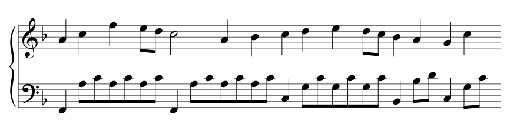
Easy 6 Alberti bassalberti
Fa3-Do4-La3-Do4 in corcheas, again and again: the lowest, the highest and the middle note of the triad. Easy because the hand never leaves the position of the triad.
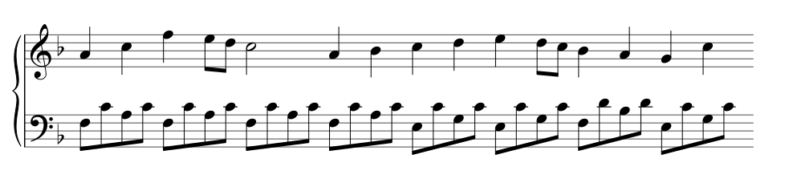
Easy 7 Triad up and downtriad-up-and-down
Fa3-La3-Do4-La3 in corcheas: the three notes of the chord going up and coming down. Easy because the figure is symmetric and stays in one position.
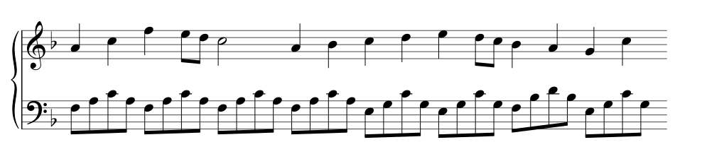
Easy 8 Triad up, then heldtriad-up-and-hold
Fa3 and La3 in corcheas, then Do4 as a negra: the triad goes up and stops on its top note. Easy because three fingers stay on three keys.
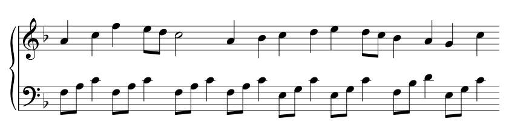
Easy 9 Triad down, then heldtriad-down-and-hold
Do4 and La3 in corcheas, then Fa3 as a negra: the same figure going down. Easy for the same reason as going up.
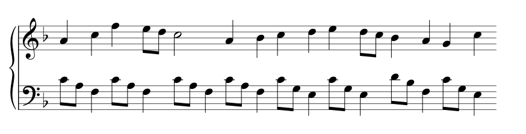
Easy 10 Chord, then two notes abovechord-then-two-notes-above
Fa3-La3-Do4, then Do4-Fa4: the chord, then two of its notes in a higher position, again and again. Easy because the hand moves a little and comes back, always with the same two shapes.
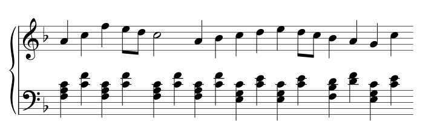
Easy 11 Held two-note chordheld-two-note-chord
The fifth Fa3-Do4 held as blancas (Do3-Sol3 and Sib2-Fa3 for the other chords). Easy because two notes are enough to give the harmony and the hand holds one shape.
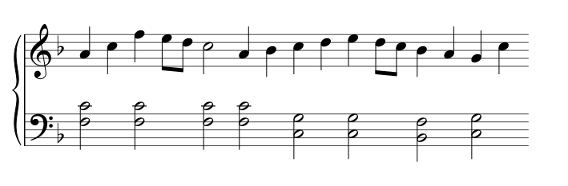
Easy 12 Low note, then two-note chordslow-note-then-two-note-chords
Fa2, then La3-Do4 three times in negras. Easy because the chord has only two notes and its shape never changes.
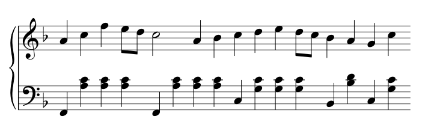
Easy 13 Two-note chord, then an arpeggiotwo-note-chord-then-arpeggio
Fa3-Do4 together, then Fa3-La3-Do4-La3-Fa3-La3 in corcheas. Easy because the arpeggio uses the same position as the two-note chord.
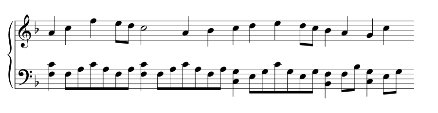
Easy 14 Fifth to sixth, rockingfifth-to-sixth-rocking
Fa3-Do4, then Fa3-Re4, in negras: the upper note moves one key and back while the lower note stays. Easy because only one finger moves.
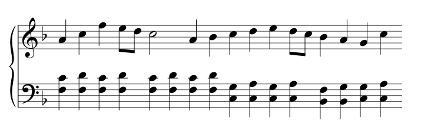
Medium 1 Low note, then the octavelow-note-then-octave
Mi2, then the octave Mi3-Mi4 on the two next beats, in a slow tempo. Medium because of the octava; the jump and the shape are the same in every bar.

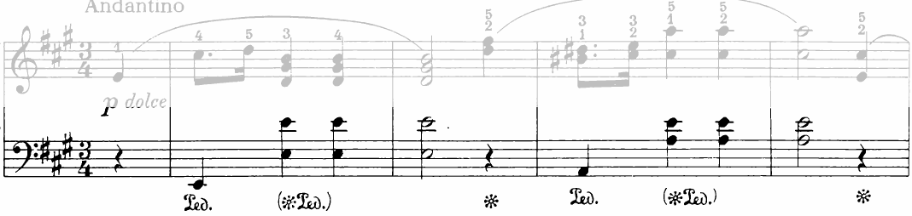
Medium 2 Low note, then two chordslow-note-then-two-chords
The waltz left hand: a low note on the first beat, then the same chord on the second and third beats. Medium because the hand jumps every bar, but the chord shape stays and only the bass note changes.

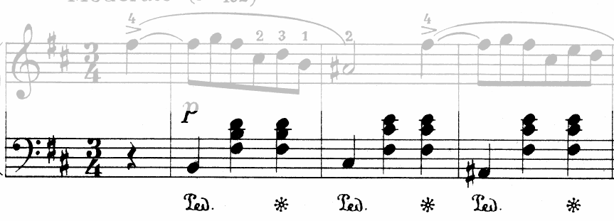
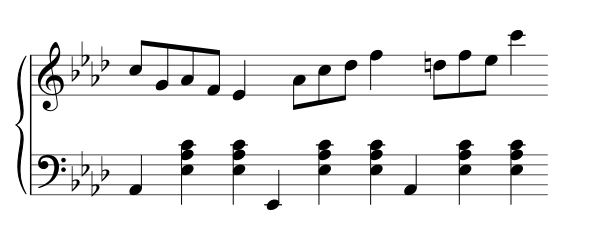
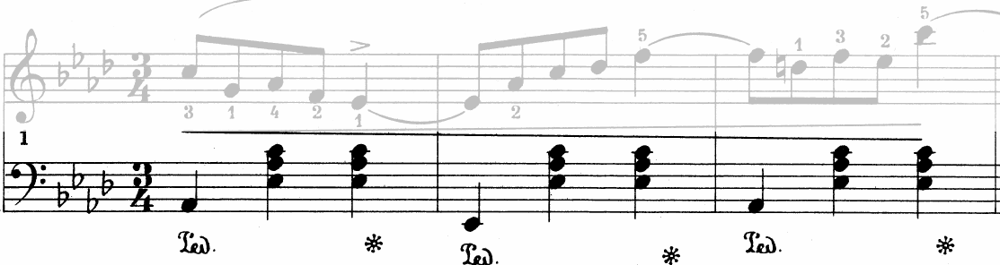
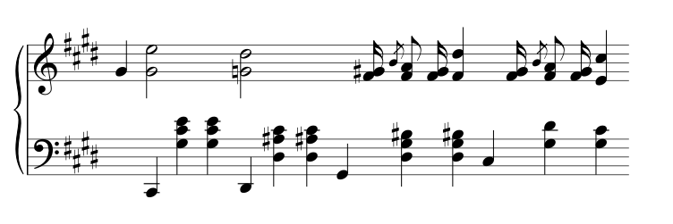
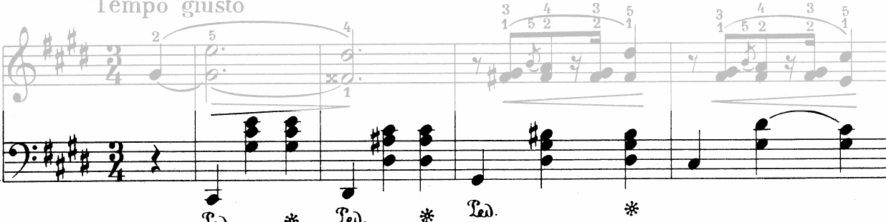
Medium 3 Held bass under two chordsheld-bass-under-two-chords
The low note is held for the whole bar (blanca with puntillo) while two chords sound on the second and third beats. Medium because there is no jump: the hand stays over the bass and the chord.
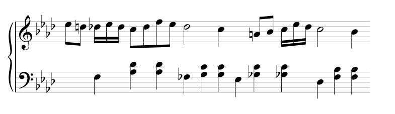
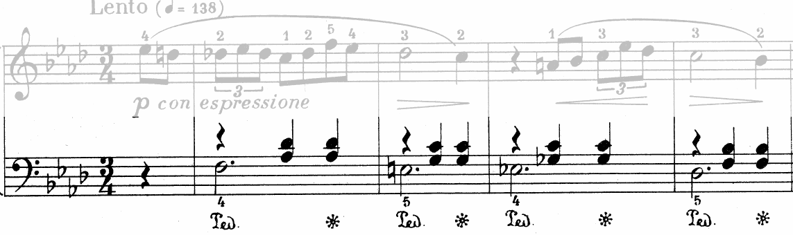
Medium 4 Low note, then two chords, in corcheaslow-note-then-two-chords-in-corcheas
Mib2, then two chords in beamed corcheas (Sol3-Mib4, then Sib3-Mib4-Sol4), three times in a bar. Medium because the figure repeats at every beat; the second chord only adds a note on top.
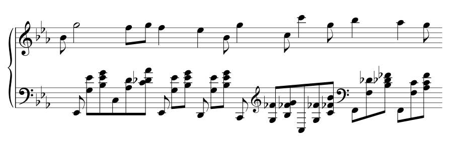
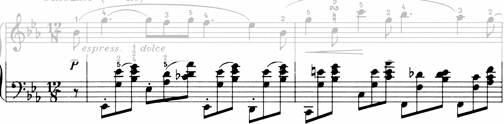
Medium 5 Same chord, one note changessame-chord-one-note-changes
One chord repeated in corcheas (Sol3-Si3-Mi4); every bar or half bar one or two of its notes move down (Fa#3-La3-Mi4, then Fa#3-La3-Mib4, then Fa3-La3-Mib4). Medium because of the many notes, but the hand never leaves its position.

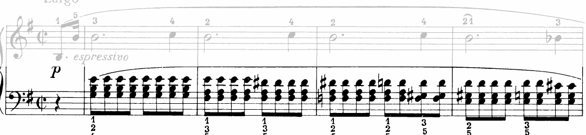
Medium 6 Repeated noterepeated-note
Lab3 repeated in corcheas, with a low note and a small chord on the strong beats. Medium because the thumb stays on one key and the other fingers add the harmony.
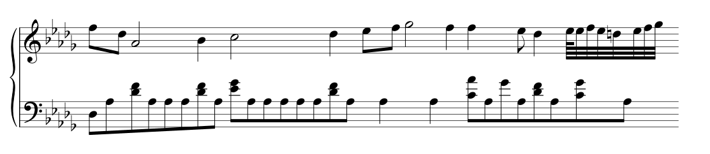
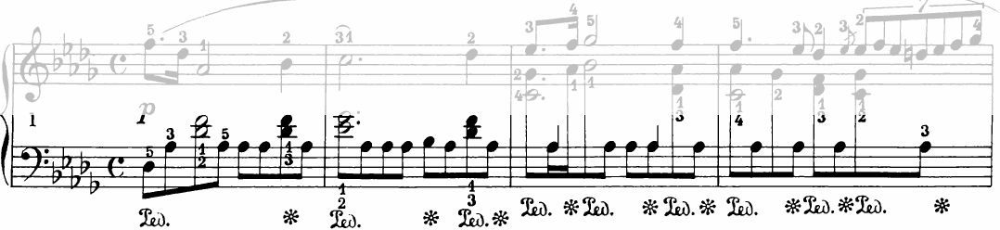
Medium 7 Octave bass in negrasoctave-bass-in-negras
Octavas in negras that walk down by semitones (Do, Si, Sib, La, Lab, Sol). Medium because the hand keeps the octave shape and slides; it gives a strong bass without more notes.
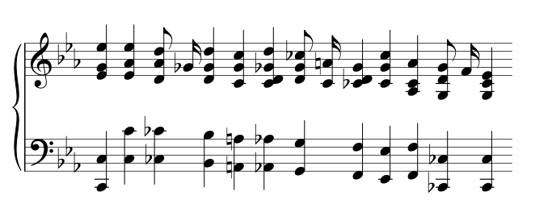
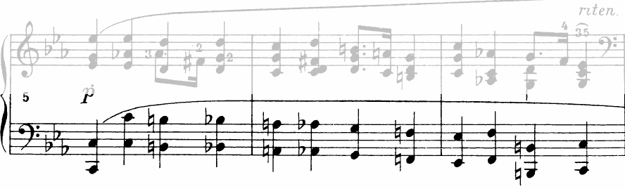
Medium 8 Low note, then a small wavelow-note-then-small-wave
Fa#2, then Mi#3-Sol#3-Fa#3-La#3 and back to Do#3: a low note and a short figure up and down inside one hand position, the same at every half bar. Medium because the figure never changes.
Medium 9 Simple line in negrassimple-line-in-negras
Single notes in negras: a low note, then a broken chord that climbs, with a step or two between its notes (Sib1, Sib2, Lab3, Fa3, Do4, Sib3). Medium because there are few notes and they are easy to read, although they belong to no fixed shape (the user's example of page 10).

Medium 10 Octava, then an arpeggiooctave-then-arpeggio
Fa2-Fa3 together, then Fa3-La3-Do4-La3-Fa3-La3 in corcheas. Medium because of the octava and the jump to the arpeggio; the arpeggio itself stays in one position.
Medium 11 Low note, then chords off the beatlow-note-then-off-beat-chords
Fa2 on the beat, then the triad on the half beats (corcheas), with blank space between them. Medium because of the rhythm: the chord sounds between the beats.
Medium 12 Added sixth, up and downadded-sixth-up-and-down
Fa3-La3-Do4-Re4 and back in corcheas: the triad with its sixth (Re), a new note of the chord. Medium because the hand uses four fingers, still in one position.
Medium 13 Held bass under rocking notesheld-bass-under-rocking-notes
Fa3 held for the whole bar while La3-Do4 rock above it in corcheas. Medium because one hand plays two voices: one finger holds and the others move.
Medium 14 Triad in semicorcheastriad-in-semicorcheas
Fa3-La3-Do4-La3 in semicorcheas at every beat. Medium because the notes are fast, although the figure and the position never change.
Medium 15 Octava, then two beamed chordsoctave-then-two-beamed-chords
Fa2-Fa3, then the triad twice in beamed corcheas, twice in each bar (the brief's example of an octava and two corcheas of the chord). Medium because of the jump between the octava and the chord.
Medium 16 Alternating bass and chordalternating-bass-and-chord
Fa2, the triad, Do3, the triad, in negras: the bass changes between the root and the fifth of the chord. Medium because the bass note moves every two beats.
Medium 17 Arpeggio in 3 + 3 + 2arpeggio-three-three-two
The triad in corcheas grouped 3 + 3 + 2 (Fa3-La3-Do4, Fa3-La3-Do4, Fa3-La3), a common rhythm in pop songs. Medium because the groups do not follow the beat, although the notes stay in one position.
Medium 18 Octavas rockingoctave-rocking
Fa2, Fa3, Fa2, Fa3 in corcheas: the octava played as two notes, one after the other. Medium because the hand stays open on the octava for the whole bar.
Medium 19 Chord, then an arpeggio downchord-then-arpeggio-down
The triad, then Fa4-Do4-La3-Fa3-La3-Do4 in corcheas: down from the top and back. Medium because the arpeggio covers an octava, one note more than the triad.
Hard 1 Octave, then the chord up and downoctave-then-chord-up-and-down
The octava Mi1-Mi2, then the chord in negras going up and coming down with the same notes. Hard because the hand jumps and changes fingers, but the way down repeats the way up (the user's example of page 12).

Hard 2 Low note, then a chord that moveslow-note-then-moving-chord
Fa3, then Reb4-Mi4-Sol4 and the same shape one step lower (Sib3-Reb4-Mi4); then Fa2, Do4-Fa4-Lab4 and Lab3-Do4-Fa4. Hard because the second chord moves (the brief's hard level) and the hand crosses from the bass to the treble clef.
Hard 3 Octaves that draw the chordoctaves-that-draw-the-chord
Octavas in corcheas that go through the notes of the chord (Solb, Reb, Solb, Sib, Mib, Sib) under held chords of the right hand. Hard because the hand moves on every note, but it keeps the octave shape and a regular figure.
Hard 4 Wave in one positionwave-in-one-position
A low note, then semicorcheas in groups of six that go up and come down over the chord (Dob2, then Dob3-Reb3-Fa3-Reb4-Fa3-Reb3). Hard because they are fast, but each wave is symmetric and the hand stays over one place.
Hard 5 A line that belongs to no chordline-of-no-chord
A low note, then two-note chords in corcheas whose notes move apart, the lower one down by semitones and the upper one up (Mi3-Sol3, Mib3-La3, Re3-Sib3, Do3-Do4). Hard because the line fits no known chord (the brief's irregular passages), but the hand stays in one position.
Hard 6 Four-note arpeggio up and downfour-note-arpeggio-up-and-down
Fa3-La3-Do4-Fa4 and back in corcheas: the triad with its octava as a fourth note. Hard because the hand is open on the octava and uses all five fingers.
Hard 7 Low note, then four-note chordslow-note-then-four-note-chords
Fa2, then Fa3-La3-Do4-Fa4 three times in negras. Hard because the chord fills the octava and the hand jumps to it.
Hard 8 Open arpeggio up and downopen-arpeggio-up-and-down
Fa2-Do3-Fa3-La3-Do4 and back in corcheas: the root, the fifth, the octava and the tenth. Hard because the arpeggio covers more than an octava and the hand must move inside it.
Hard 9 Alberti over an octavaalberti-over-an-octave
Fa3-Fa4-Do4-Fa4, La3-Fa4-Do4-Fa4: the Alberti figure with the octava on top. Hard because the hand stays open on the octava while the lower fingers change.
Hard 10 Four-note wave in semicorcheasfour-note-wave-in-semicorcheas
Fa2, then Fa3-La3-Do4-Fa4 up and down in semicorcheas. Hard because the wave is fast and covers an octava; it is symmetric, so the fingers repeat.
Hard 11 Octava, then a chord that moves uplow-note-then-chord-moving-up
Fa2-Fa3, then Fa3-La3-Do4 and La3-Do4-Fa4 in corcheas: the second chord is the same chord one position higher (the brief's La4-Do5-Mi5, then Do5-Mi5-La5). Hard because the hand moves between the two chords.
Hard 12 Octava, then four-note chordsoctave-then-four-note-chords
Fa2-Fa3, then Fa3-La3-Do4-Fa4 six times in corcheas. Hard because the hand jumps and then repeats a full chord fast.
Hard 13 Held bass under moving thirdsheld-bass-under-moving-thirds
Fa3 held, with La3-Do4 and Sib3-Re4 moving above it in corcheas. Hard because one hand plays two voices and the upper voice moves two fingers at a time.
Hard 14 Four-note chords off the beatoff-beat-four-note-chords
Fa2-Fa3 on the beat, then Fa3-La3-Do4-Fa4 on the half beats. Hard because of the jump, the full chord and the rhythm between the beats.
Hard 15 Arpeggio up, then the chordarpeggio-up-then-chord
Fa3-La3-Do4-Fa4 in corcheas, then the four notes together as a blanca. Hard because the hand covers the octava twice, first note by note and then all at once.
Super hard 1 Sweeps over two octavessweeps-over-two-octaves
From Fa2 up to Lab4 in six semicorcheas, twice in each bar, then a jump back down. Super hard because the hand opens, crosses and jumps without rest while the right hand runs in groups of 7 and 8.

Super hard 2 Fast octaves in strettofast-octaves-in-stretto
A chord, then octavas in corcheas (Dob, Sib, Do, Sib), faster and faster (stretto), under chords of four notes that jump in the right hand. Super hard because both hands play heavy shapes at speed.
No pattern at this level in this tab.